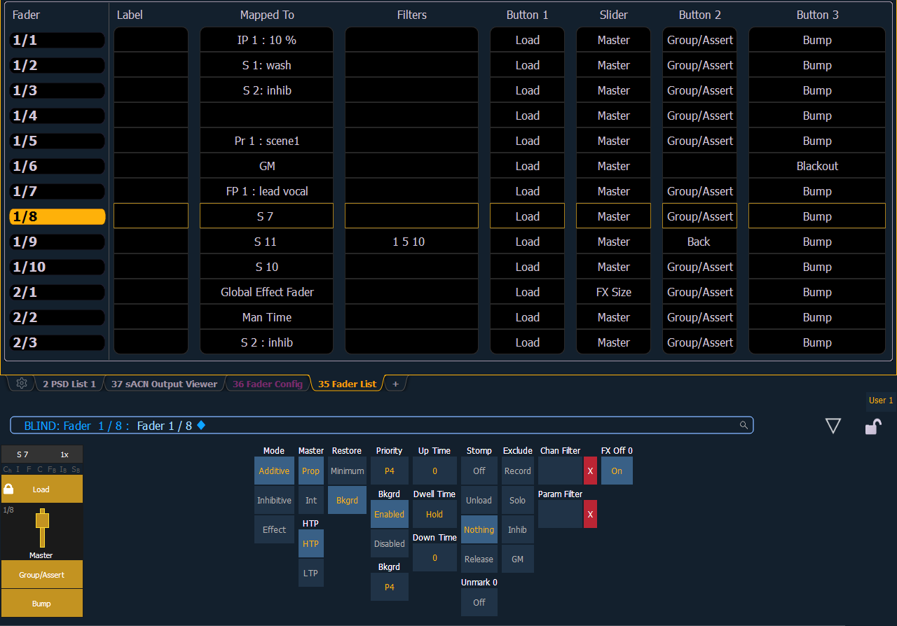
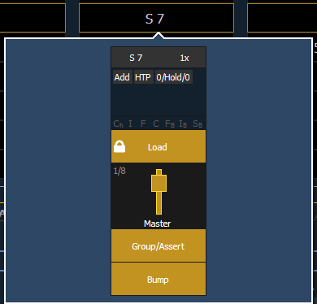

The Fader List, which shows all of the faders and their assignments, can be found in Tab 35.

You can also make changes to a fader's configuration while in the fader list display by clicking on a column. A virtual fader will be displayed. Click on the appropriate area of the fader to access the configuration options. Selection can be done by clicking in the column or from the command line.

Range editing is possible in this display by selecting all the needed faders. Changes made to the configuration will be made to all of the selected faders.
With a fader selected, the CIA will also display a virtual fader and the configuration options for that fader.